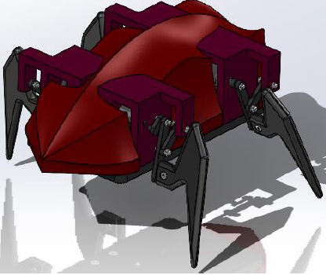

As part of my CAD course, we were tasked with designing a dynamic system and animating it. I am quite interested in
robotics and want to eventually be able to make a robot myself. As such I chose to make a concept design for a 3D printable
Spider Quad Robot.
